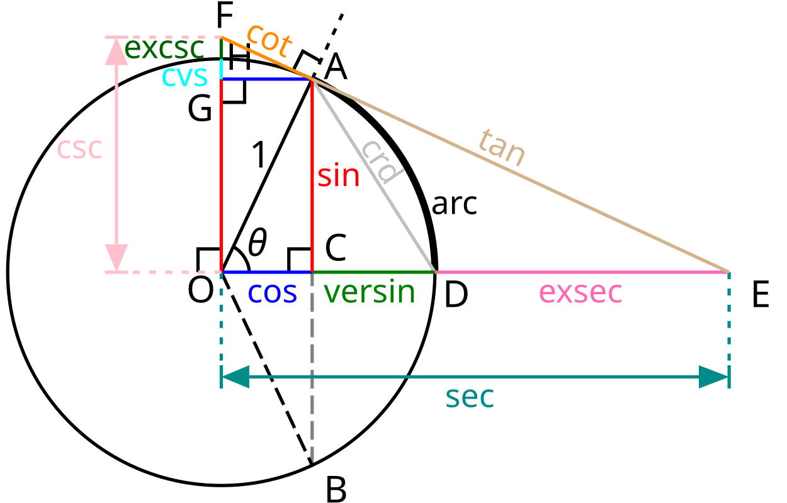

Jag gillar matte. Så jag byggde den här sidan. Det är ungefär hela storyn.
Matte förklaras ofta på ett sätt som gör det onödigt krångligt. Det ville jag göra något åt. Ingen stor grej, jag tyckte det saknades en sida som faktiskt pratar normalt. Den här sidan är till för dig som vill förstå matten bakom formler, bevis och metoder på riktigt. Utan fluff, utan prestige och utan att du behöver vara något geni. Jag försöker förklara saker så tydligt jag bara kan, med intuitionen i fokus och med exempel som faktiskt hjälper. Inga konstiga symboler utan förklaring, inga hopp i logiken. Min förhoppning är att du inte bara får svaret, utan också förstår varför det är så. På riktigt. Ett steg i taget.

Ser ni? För komplicerat
En mattesida utan onödigt fluff. Förklaringar som faktiskt hänger ihop, utan att du behöver en textbok bredvid dig. Det är det. Här hittar du genomgångar av allt från grundläggande algebra till mer avancerade ämnen som analys, differentialekvationer, linjär algebra och mycket mer. Varje ämne bryts ner från grunden, med tydliga exempel, visualiseringar och motiveringar. Allt är skrivet för att du ska förstå på riktigt, inte bara memorera. Den här sidan är för dig som pluggar, är nyfiken eller bara vill förstå saker på djupet. Oavsett om du går gymnasiet, universitetet eller bara råkar gilla matte. Mänsklighetens mest aggressiva hobby, ärligt talat. Matte ska inte kännas som ett hinder. Det ska kännas som ett språk. Och det är precis det vi lär oss här.
Kolla in innehållet om du vill ha något faktiskt användbart.